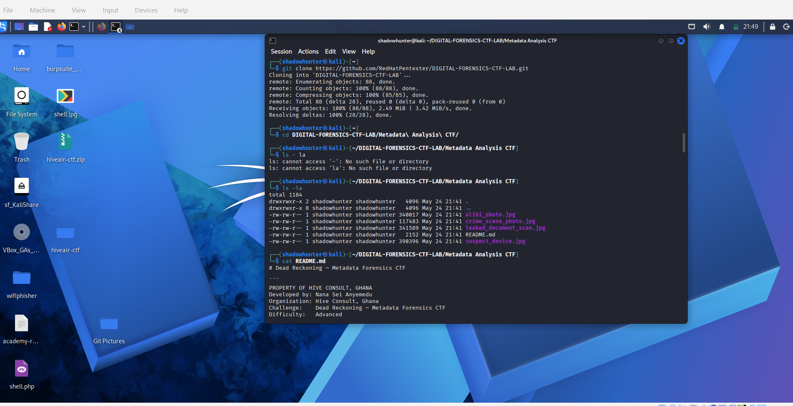
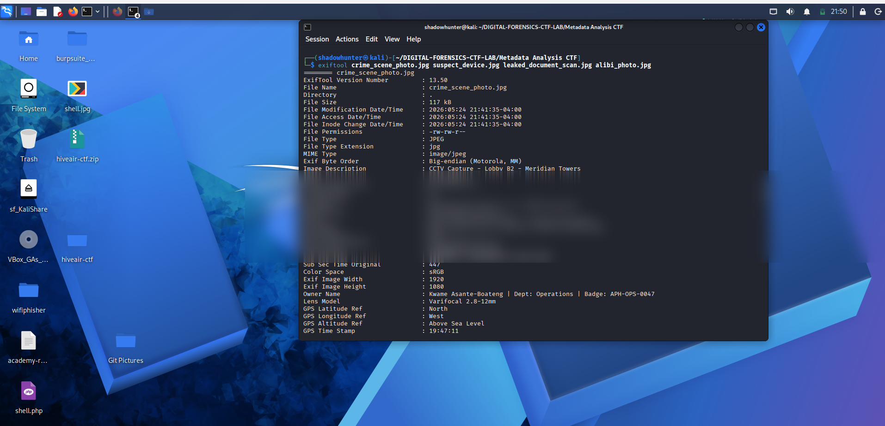
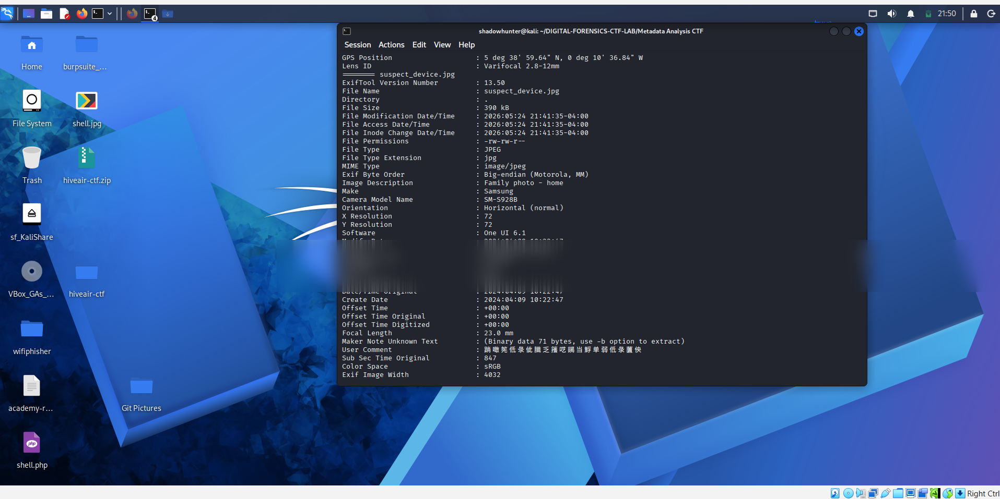
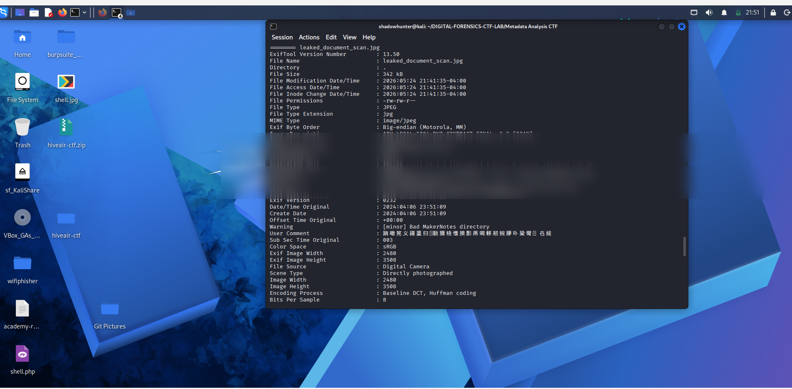
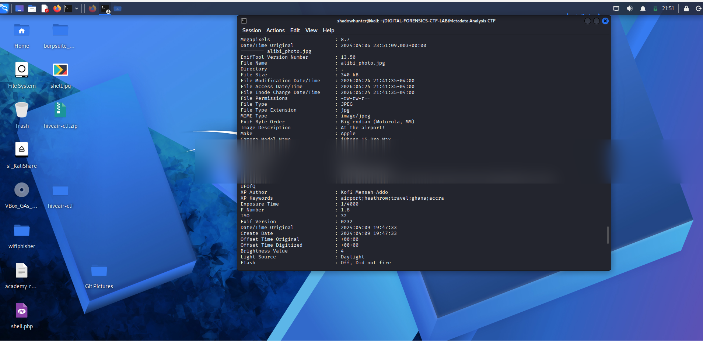
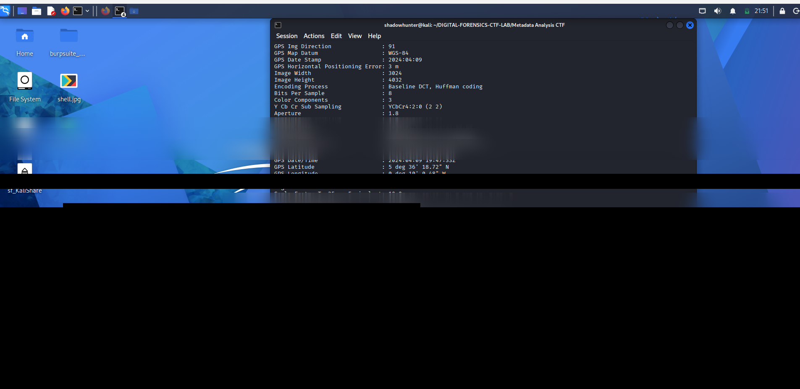

Challenge: Dead Reckoning — Metadata Forensics CTF
Category: Digital Forensics / Metadata Analysis
Difficulty: Advanced
Author: Nana Sei Anyemedu — Hive Consult, Ghana
Analyst: Abubakar Sadik
A senior operations analyst at Accra Petroleum Holdings (APH) was found dead in his apartment on the night of April 9, 2024. His company laptop was missing. Three days prior, highly classified petroleum exploration contracts were leaked to an unknown foreign entity.
Police recovered a USB drive at the scene containing four image files. A prime suspect — Kofi Mensah-Addo, APH Operations Department — claimed he was in London at the time, about to board a flight back to Accra.
Mission: Prove or disprove his alibi using metadata.
| File | Description |
|---|---|
crime_scene_photo.jpg |
CCTV capture from the scene |
suspect_device.jpg |
Photo from suspect's personal phone |
leaked_document_scan.jpg |
Scan of the leaked contract |
alibi_photo.jpg |
Suspect's claimed airport selfie |
| Tool | Purpose |
|---|---|
exiftool |
Extract metadata from all image files |
exiftool -b | strings |
Extract binary MakerNote hidden data |
base64 -d |
Decode base64-encoded hidden flag |
git clone https://github.com/RedHatPentester/DIGITAL-FORENSICS-CTF-LAB.git
cd DIGITAL-FORENSICS-CTF-LAB/Metadata\ Analysis\ CTF/
ls -la
cat README.md
This revealed four JPEG evidence files and a README detailing the 8 questions to solve.
exiftool crime_scene_photo.jpg suspect_device.jpg leaked_document_scan.jpg alibi_photo.jpg
From crime_scene_photo.jpg metadata:
GPS Latitude : [REDACTED]
GPS Longitude : [REDACTED]
GPS Position : [REDACTED]📍 Finding: The GPS coordinates place the CCTV camera at [REDACTED] — contradicting the official report's stated location.
Date/Time Original : [REDACTED] ← when photo was taken
Modify Date : [REDACTED] ← when file was modified⚠️ Finding: The footage was originally captured on April 6 but was modified/re-processed on April 9 at 22:14 — the same night as the murder. This is clear evidence of footage tampering.

Offset Time Original : [REDACTED]🌍 Finding: London in April operates on BST ([REDACTED]). The suspect's Samsung Galaxy S24 Ultra recorded timezone [REDACTED] ([REDACTED]). This proves his phone was not in the UK when the photo was taken.
exiftool -b -MakerNoteUnknownText suspect_device.jpg | stringsSamsung|SN:[REDACTED]|IMEI:[REDACTED]|[REDACTED]📱 Finding:
[REDACTED][REDACTED][REDACTED]
Artist : Kofi Mensah-Addo | APH Operations Dept | Unauthorized Copy
Software : [REDACTED] [INTERNAL] | User: [REDACTED]
Scanner : Canon imageFORMULA DR-C230📄 Findings:
[REDACTED]The Artist field self-incriminates with the tag "Unauthorized Copy". The suspect used his own corporate account to scan and leak classified documents.

GPS Latitude : [REDACTED]
GPS Longitude : [REDACTED]
GPS Position : [REDACTED], [REDACTED]| Location | Coordinates |
|---|---|
| Embedded in photo | [REDACTED] → [REDACTED] |
| Heathrow (claimed) | [REDACTED] → London, England |
| Distance apart | ~[REDACTED] |
✈️ Finding: The suspect claimed to be at Heathrow Airport. The GPS in his iPhone 15 Pro Max places him at [REDACTED]. [REDACTED]

XP Comment : [REDACTED]echo "[REDACTED]" | base64 -d[REDACTED]🚩 Flag: [REDACTED]
| # | Flag |
|---|---|
| 🚩 Flag 1 | [REDACTED] |
| 🚩 Flag 2 | [REDACTED] |
| Question | Answer |
|---|---|
| Q1 — True GPS location | [REDACTED] → [REDACTED] |
| Q2 — Timestamp discrepancy | [REDACTED] |
| Q3 — Timezone offset | [REDACTED] [REDACTED] not [REDACTED]
[REDACTED] |
| Q4 — Device serial | [REDACTED] / IMEI: [REDACTED] |
| Q5 — Document author & software | Kofi Mensah-Addo / [REDACTED] |
| Q6 — Embedded email | [REDACTED] |
| Q7 — Alibi photo GPS | [REDACTED] |
| Q8 — Decoded flag | [REDACTED] |
-b | stringsDate/Time Original vs Modify DateXPComment
are classic CTF flag placementWrite-up by Abubakar Sadik — Digital Forensics CTF